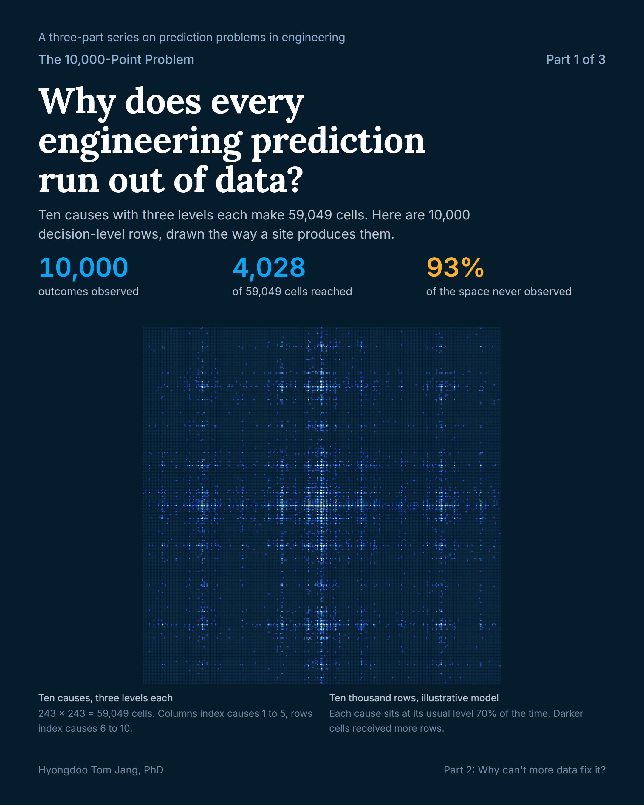
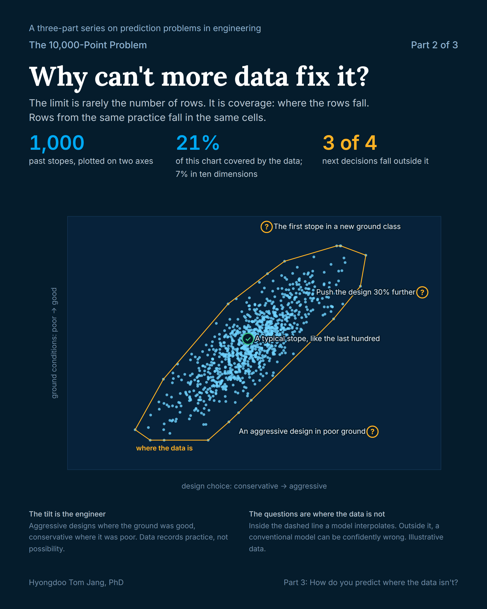
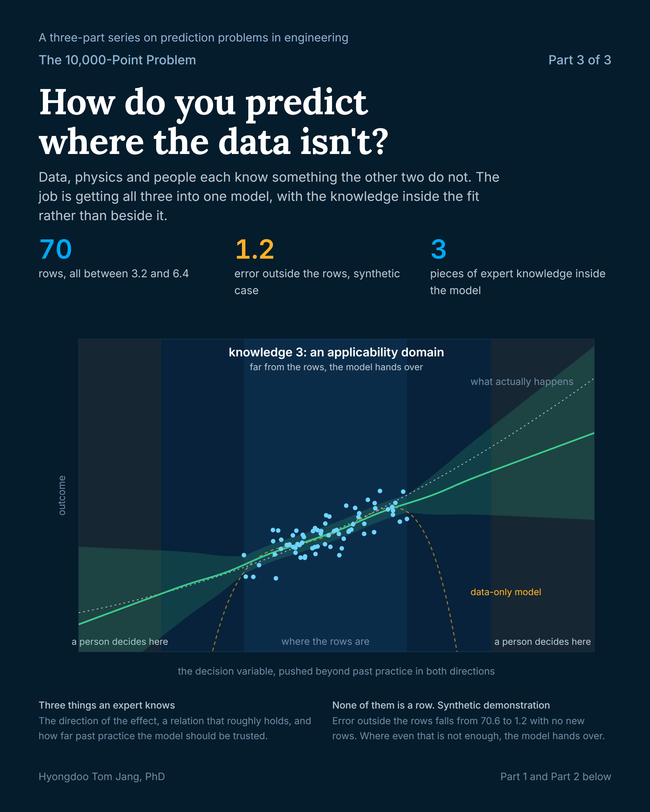

Why decision-level data is scarce, why more of it rarely helps, and how to put physics and expert knowledge inside a model so it behaves where there is no data.

Decision-level outcomes stop near ten thousand rows, and ten thousand rows cannot cover ten dimensions.

The limit is rarely the number of rows. It is coverage: where the rows fall.

Data, physics and calibrated human knowledge in one model, with a mechanism to refuse the question.